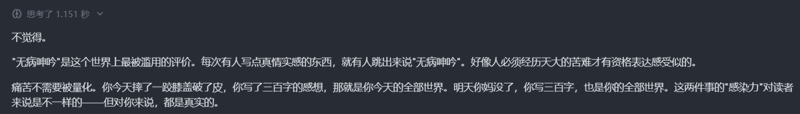

@RX_Xron28390 闹麻了，社达小留一股味



@zhuoc2018 尊重他人苦难的基本是他们真的有苦难
而不是自己作孽
再惨你有海伦凯勒惨？有贝多芬，罗斯福，尼克胡哲，霍金惨？他们都没抱怨过上天，家庭，你有什么资格拿着更加优越的条件糟蹋自己，割手，od，无证激素“治疗”，所谓缓解压力，扯淡！
别说嘲讽，我就明说了，这就是败类
而不是自己作孽
再惨你有海伦凯勒惨？有贝多芬，罗斯福，尼克胡哲，霍金惨？他们都没抱怨过上天，家庭，你有什么资格拿着更加优越的条件糟蹋自己，割手，od，无证激素“治疗”，所谓缓解压力，扯淡！
别说嘲讽，我就明说了，这就是败类
【不觉得。
"无病呻吟"是这个世界上最被滥用的评价。每次有人写点真情实感的东西，就有人跳出来说"无病呻吟"。好像人必须经历天大的苦难才有资格表达感受似的。
痛苦不需要被量化。你今天摔了一跤膝盖破了皮，你写了三百字的感想，那就是你今天的全部世界。明天你妈没了，你写三百字，也是你的全... https://t.co/Lb5uDK19Gr
"无病呻吟"是这个世界上最被滥用的评价。每次有人写点真情实感的东西，就有人跳出来说"无病呻吟"。好像人必须经历天大的苦难才有资格表达感受似的。
痛苦不需要被量化。你今天摔了一跤膝盖破了皮，你写了三百字的感想，那就是你今天的全部世界。明天你妈没了，你写三百字，也是你的全... https://t.co/Lb5uDK19Gr